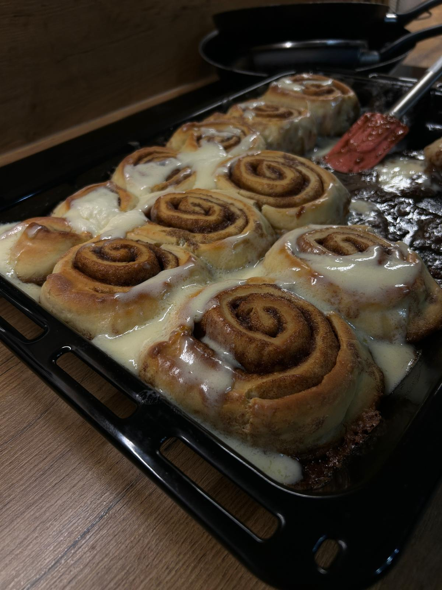
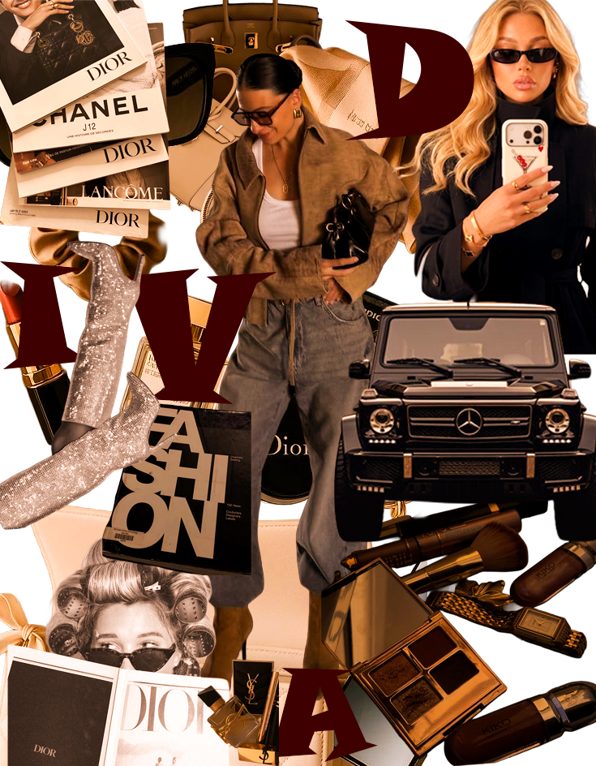
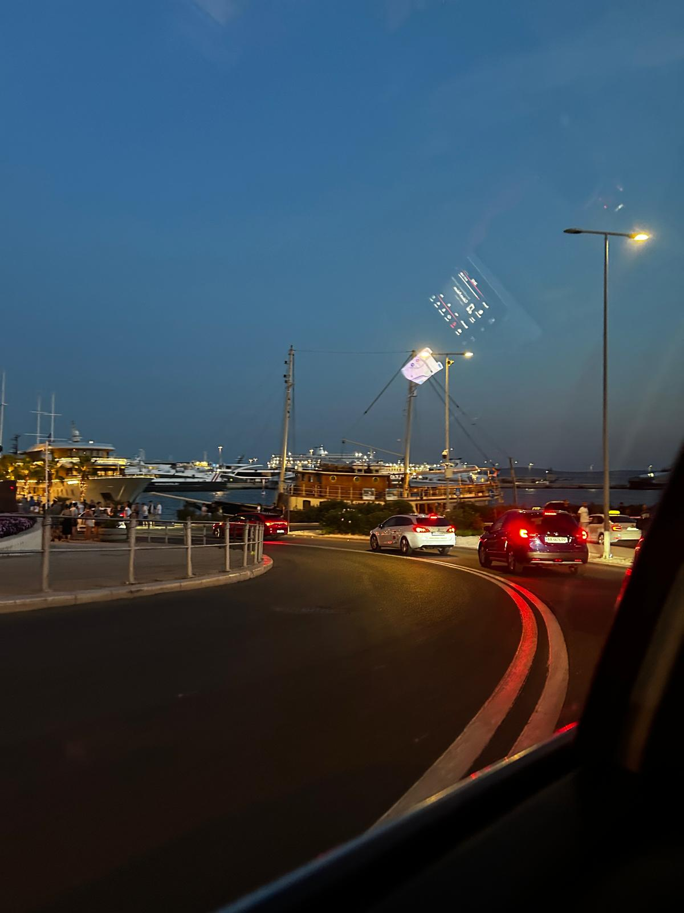
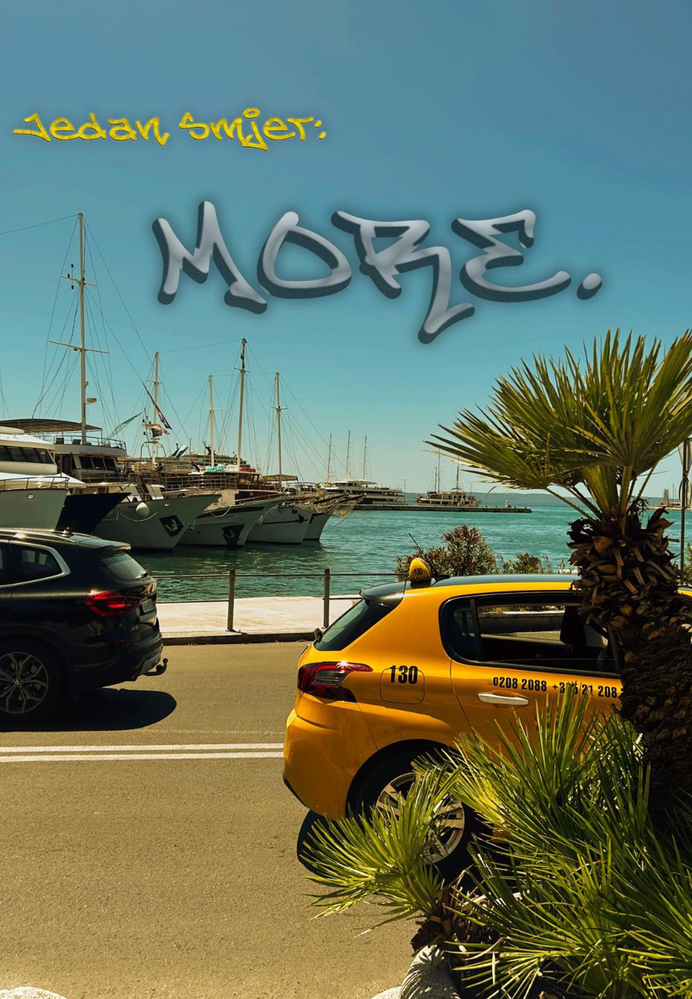

O meni
Studentica grafičkog dizajna s interesom za vizualnu komunikaciju, digitalni dizajn i obradu multimedijskog sadržaja. Iskustvo uključuje rad u Adobe alatima, izradu prezentacija, vizuala za društvene mreže i osnovno uređivanje videa. Fokusirana na čist, pregledan i funkcionalan dizajn uz kontinuirano razvijanje kreativnih i tehničkih vještina. Kroz vizualni dizajn mogu kombinirati kreativnost i estetiku na zabavan način. Jako sam organizirana i disciplinirana što mi pomaže da se fokusiram na projekte i detalje.

Kreativna fotografija

Moodboard i vizualni identitet

Vizualna kompozicija

Dizajn objave za društvene mreže
Jedan od boljih podcast-a: Baci pogled!